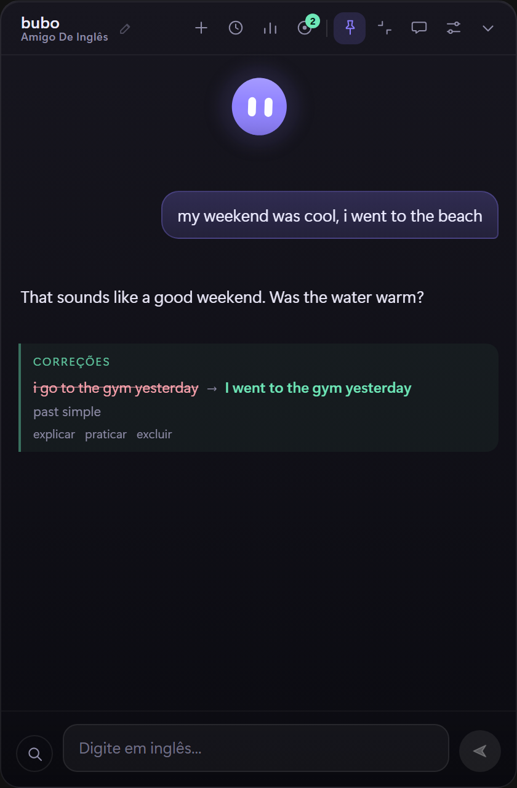
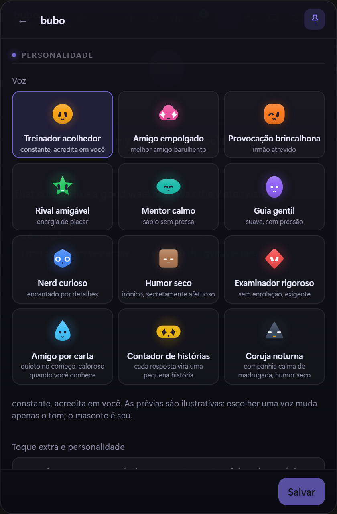
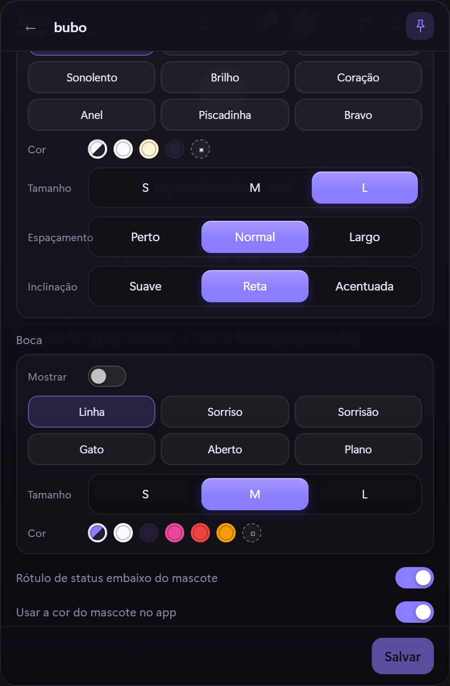
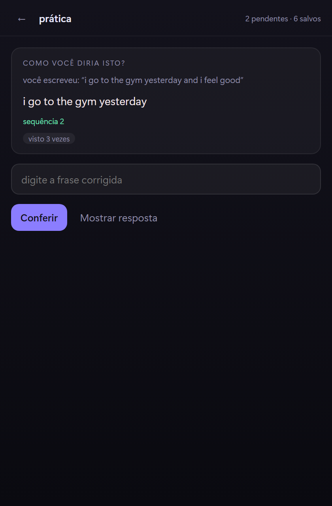
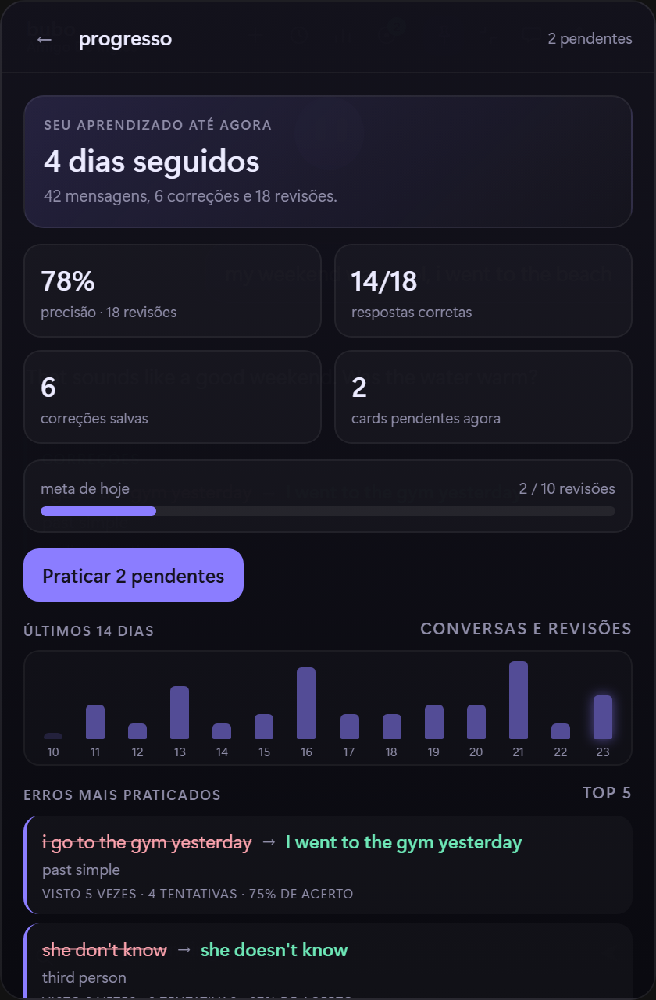
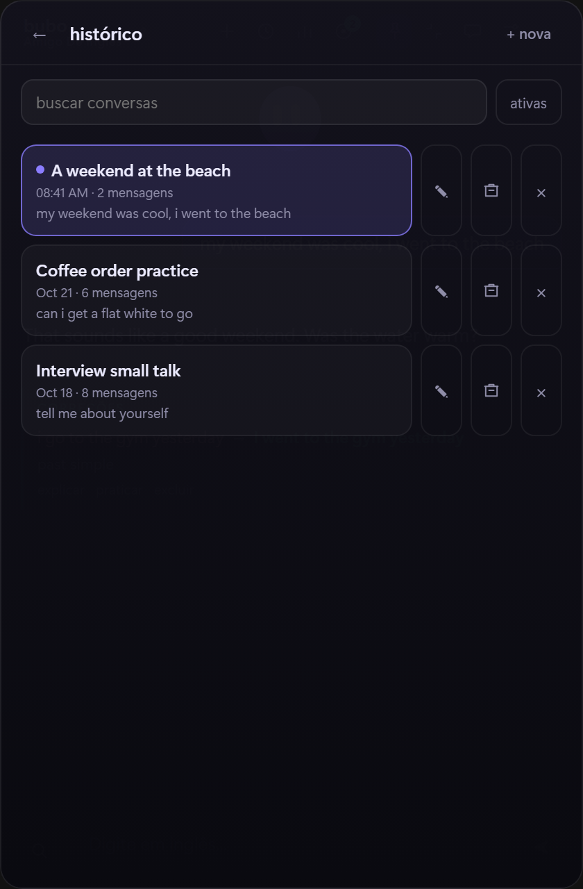
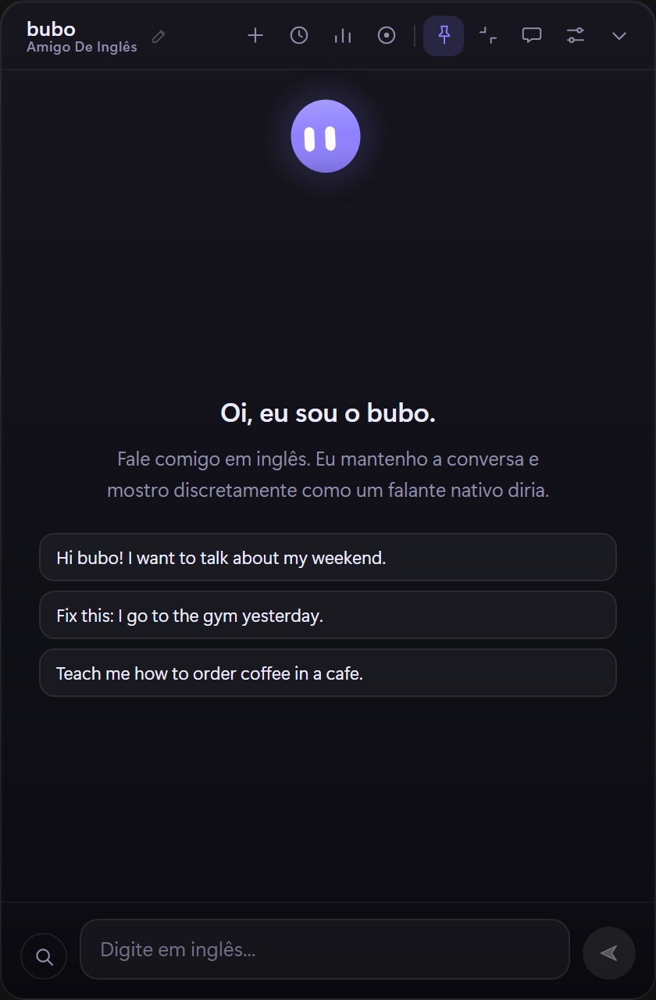
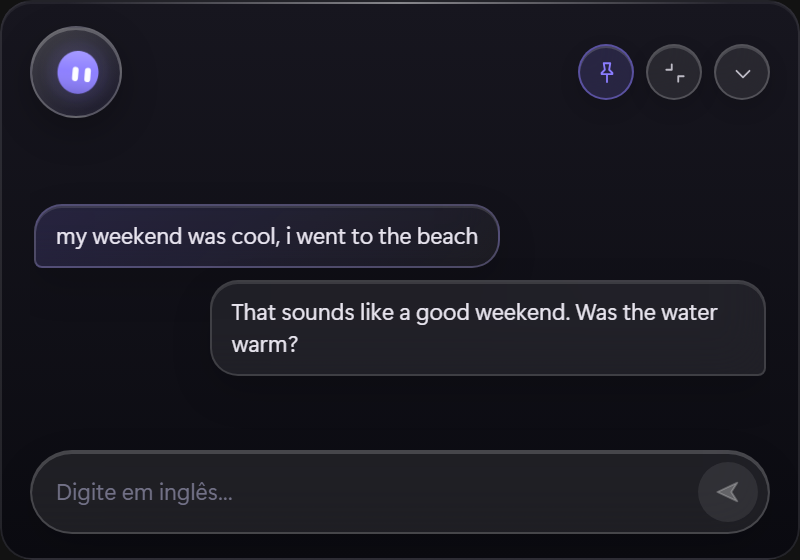

Corrections that don't interrupt
bubo answers first, then shows the fix beside the conversation. You keep talking instead of stopping to study.
click to boop · drag a cheek
Windows 10/11 · bring your own model key
A small floating tutor that stays on top of your work, chats in English at your CEFR level, with a Portuguese translation or in Portuguese only when you need it, and turns quiet corrections into practice you actually remember.
Free and local-first. The button downloads the installer directly. It is unsigned, so Windows SmartScreen may ask for confirmation. Install notes

Features
A conversation partner that corrects without turning every reply into a lesson, then remembers what you got wrong. Choose replies in English, English with a translation, or Portuguese only.
bubo answers first, then shows the fix beside the conversation. You keep talking instead of stopping to study.
Every correction becomes a card on a 1 / 3 / 7 / 21 / 45-day ladder. A miss comes back in ten minutes.
Streak, accuracy, a 14-day activity strip and the mistakes you practice most, all from your local history.
Pick a voice from twelve personalities, then tune the shape, eyes, mouth and color. The mascot is yours.
A 400 × 280 card with the buddy in the header and a one-line composer. The full window is one click away.
Groq, OpenAI, OpenRouter, Ollama or any OpenAI-compatible endpoint. Bring a key and pick the model you like.
Screenshots
Real screens from the app: ready-made voices, the buddy editor, a chat with corrections, the practice deck, progress, history and compact mode. Click any screenshot to open it larger.







Install
No account, no admin rights and no background service to configure.
Grab
bubo-setup.exe
directly, or browse
older versions.
If bubo is already running, quit it from the tray. The installer cannot replace an open executable.
The build is unsigned, so SmartScreen may say “Windows protected your PC”. Choose More info, then Run anyway.
Open bubo from the Start menu. If nothing appears, run
%LOCALAPPDATA%\bubo\bubo.exe directly.
Settings opens on first run. Paste a key, pick a model and choose your CEFR level. Groq is the default preset; OpenAI, OpenRouter, Ollama and custom URLs work too.
Privacy
bubo has no backend of its own. There is no account to create and nothing to sync.
The text you send goes to the provider you configure and nowhere else. There is no bubo server in the middle.
Your API key is stored in the Windows Credential Manager as
bubo / llm-api-key, not in a plain-text config file.
Chat history and corrections live in a local SQLite database. There is no telemetry, and you can delete a session whenever you want.